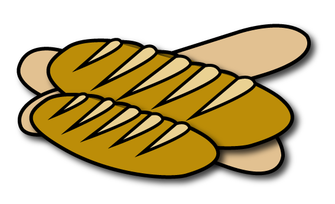
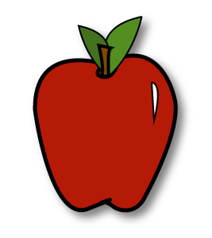
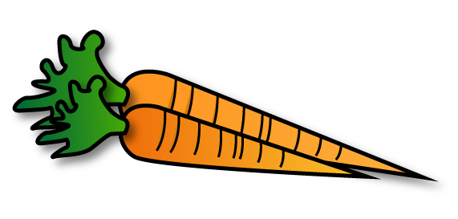

More than 6,000 new farmers markets have been newly listed in the USDA directory over the past twenty years in what farmers call the "Farmers Market Boom." This explosion in the number of markets came as a result of the local food movement, the desire to support local business in a struggling economy and a surge in community-building efforts across the nation. There are more than 8,100 farmers markets listed in the USDA National Farmers Market Directory in 2015.
From 2012 to 2013, the number of markets increased by 3.6 percent, while growth from 2012 was 10 percent and 17 percent in 2011.
Find A Farmers Market
USDA has found there are more farmers markets in the states that produce the most fruits and vegetables. California is the top producer of vegetables in the US, and there are more than 750 registered markets throughout the state.
Farmers markets have branched out from just selling farm-grown products. Most now include pottery, homemade gifts or art. Vegetables remain the most popular items bought at markets, followed by fruits.
US Agricultural Production
Of the United States' more than 2 million farms, more than 97 percent are operated by families, including individuals, family corporations or partnerships. Hover to learn more about US agricultural production
Wheat

| Rank |
5th in the world |
| Production |
42 states |
| Consumption |
1.2 billion bushels/yr |
Apples

| Rank |
2nd in the world |
| Production |
32 states |
| Consumption |
250 million cartons/yr |
Vegetables

| Rank |
3rd in the world |
| Production |
45 states |
| Consumption |
40 million tons/yr |